Current Issues
Be aware of the problems that is happeing right now around the world!
Climate Change
Today, many lives are at risk from pollution caused by us. A Time article states scientific evidence, "Air pollution was linked to 6.5 million deaths in
2015, water pollution was linked to 1.8 million deaths and workplace pollution was linked to nearly one million deaths." Nasa claims, "Global climate change has
already had observable effects on the environment. Glaciers have shrunk, ice on rivers and lakes is breaking up earlier, plant and animal ranges have shifted and
trees are flowering sooner." We will also start to notice changes such as sea level rising, temprature increasing, more droughts, and stronger hurrincanes.
Click on the pictures to learn more about the effects of climate change
 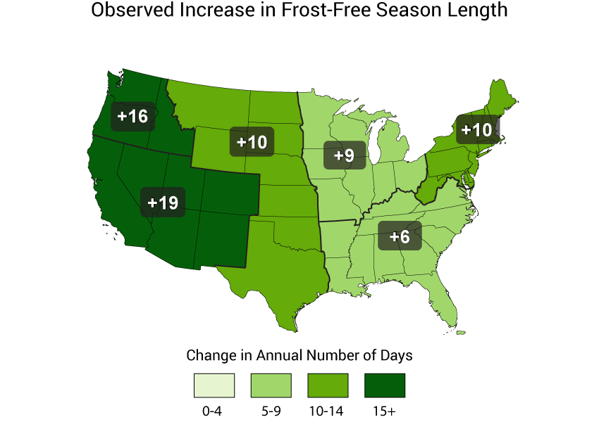
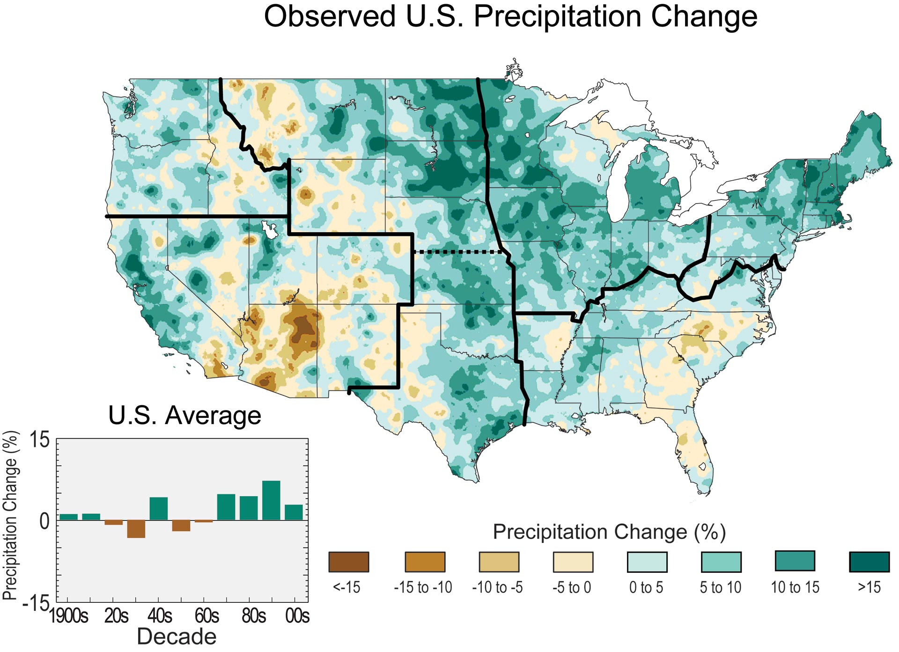
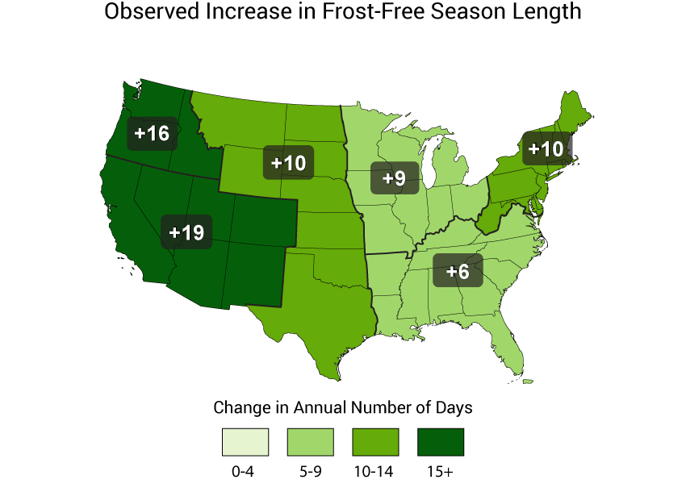
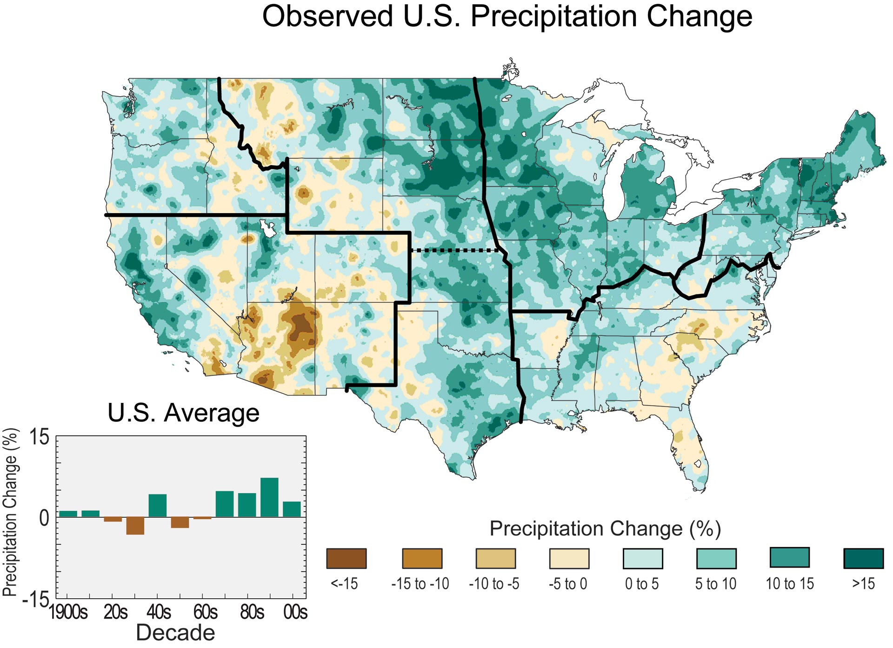
Wildlife Endangerment
Today, animals are being abused and endangered across the world. Due to human carelessness, animals are dying in their natural habitats. Instead, we should find solutions to save these animals so we could have stronger and healthier animals living in their ecosystems in our world.
Click on the pictures to learn about these animals

 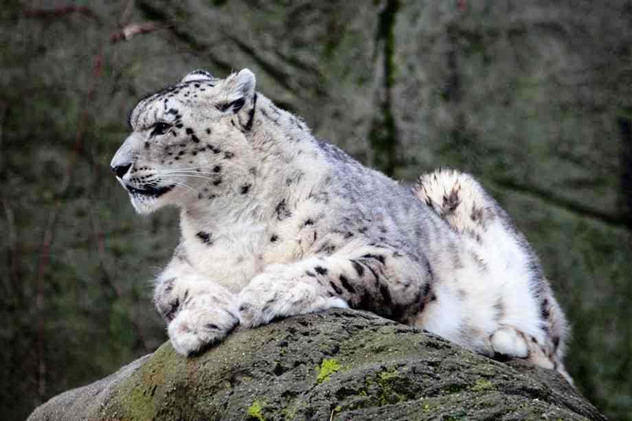
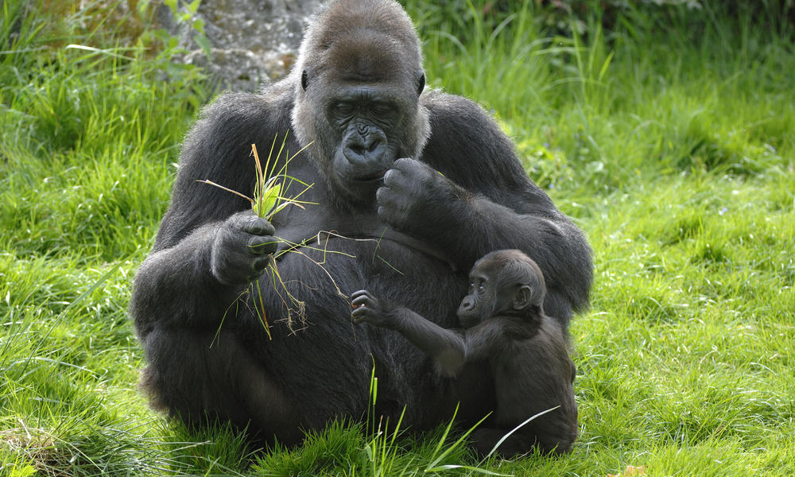
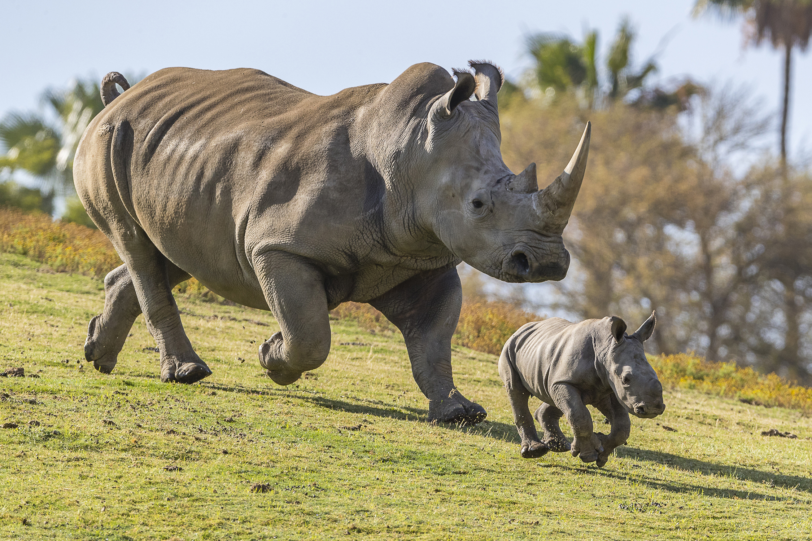
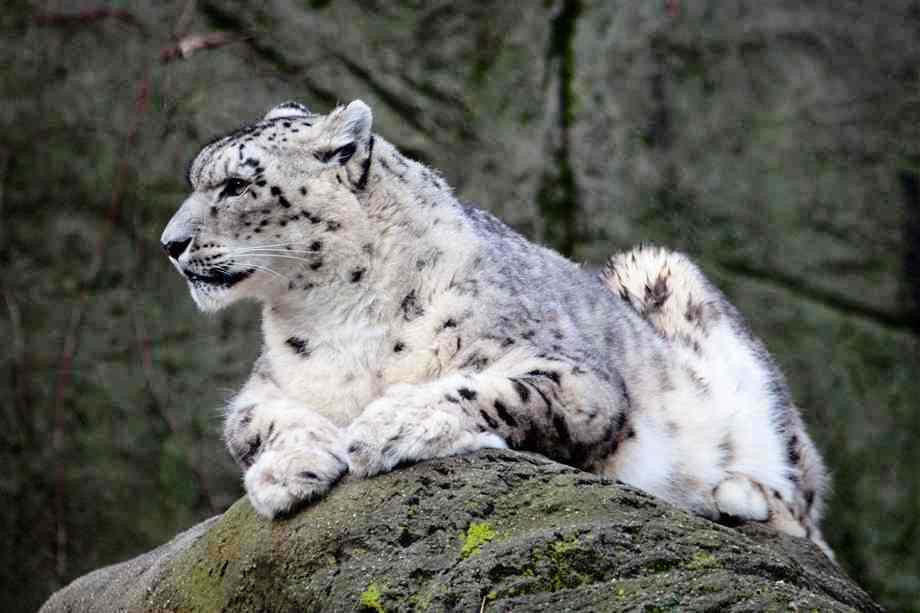
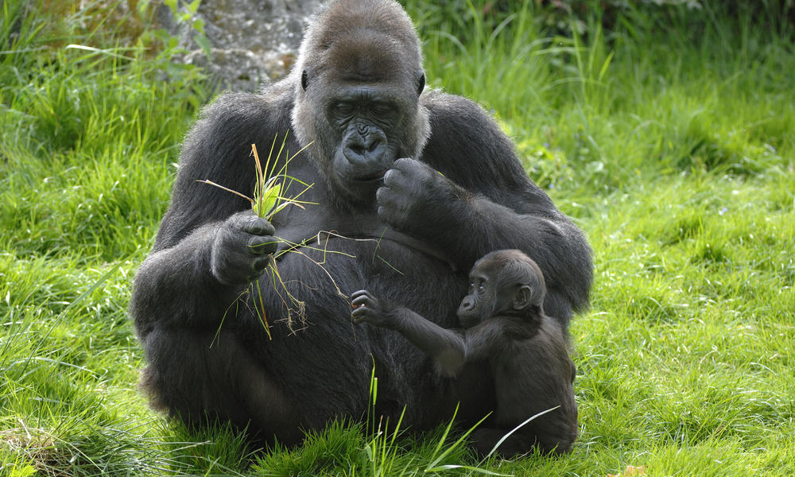
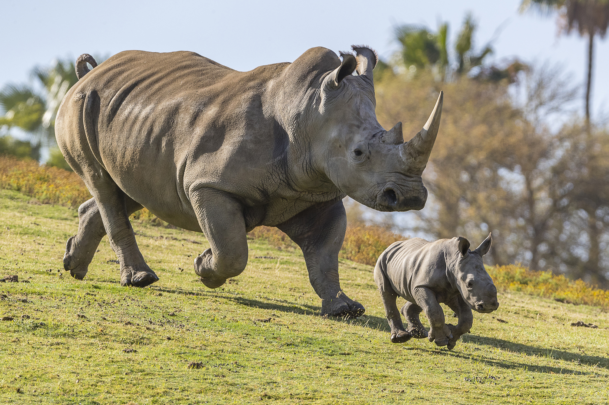
 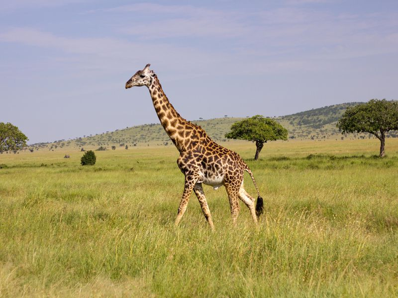
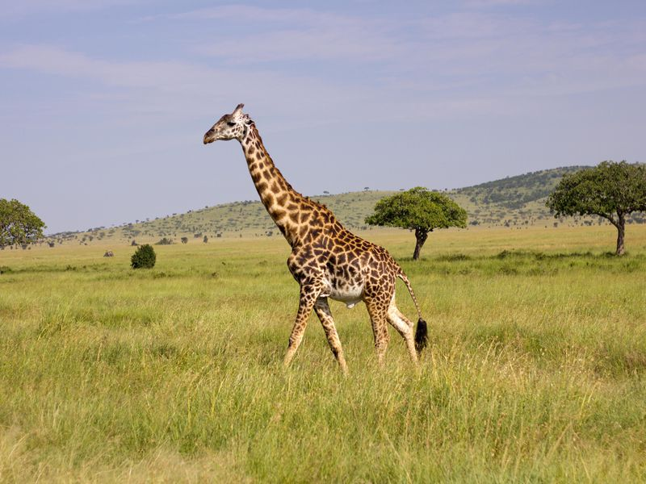